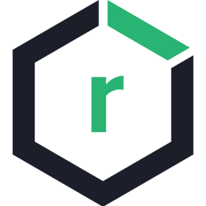
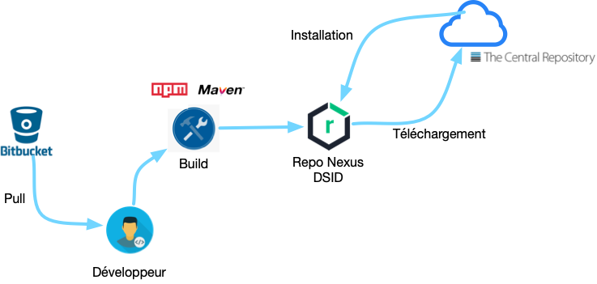
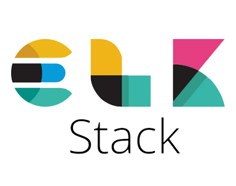

Usine logicielle et architecture applicative
Par Kamel NAJJAR / JC AWS, CKA, CKAD ,CKS, Snyk, New Relic Github et @kamel2k
Sommaire
Concepts de l'usine logicielle
Usine logicielle de la DSID
Qualité de code avec SonarQube
Gestion des dépendances et des releases avec Nexus Repository
Sécurité logicielle avec Nexus IQ
Intégration continue avec Jenkins
Architecture applicative de Gainde
Plateforme du POC
Concepts de l'usine logicielle
Usine logicielle de la DSID
Description des outils

|
 |

|
|
|
Outil open source de d'automatisation. Il aide à automatiser les parties du développement logiciel liées au build, aux tests et au déploiement, et facilite l'intégration continue et la livraison continue. |
Outil développé par Sonatype permettant la gestion des paquets logiciel de l'application. Il prend en charge les librairies Java et JS. |
Outil de détection de vulnérabilité des paquets logiciels. Il permet d'identifier les failles de sécurité et les problèmes de licences et permet d'y remedier. |
Outil pour la gestion de la qualité de code des applications Java (Spring) ou Javascript (Angular). Il permet de faire une analyse statique du code et présente des recommandations d'améliorations. |
Accès à la plateforme
|
|
http://10.2.3.58:8080/ |
| http://10.2.3.58:8081/ | |
| http://10.2.3.58:8070/ | |
|
|
http://10.2.3.58:9000/ |
Qualité de code avec SonarQube
Principe
Gestion des dépendances et des releases avec Nexus Repository
Gestion des dépendances
{kind=link}
Gestion des releases
{kind=link}
Sécurité logicielle avec Nexus IQ
Principe
{kind=link}
Intégration continue avec Jenkins
Pipeline Jenkins
Architecture applicative de Gainde
Présentation des briques techniques
| Gainde UI | Passerelle | Module Métier | ELK |

|

|
 | |
|
Application Angular qui regroupe tous les écrans des modules applicatifs. |
La passerelle c'est un module technique en spring boot, qui permet de faire un "forward" des requetes, d'externaliser la configuration de Gainde et d'assurer la sécurité avec Keycloak. |
C'est groupe de fonctionnalités qui concerne un domaine spécifique tel que manifeste ou declaration. Il s'agit d'une application en spring boot qui expose une api REST. C'est une application unitaire, scalable et résiliente |
Elasticsearch qui représente un moteur de recherche, logstash pour la transformation des logs et Kibana pour les tableaux de bord. |
Plateforme du POC
Plateforme actuelle du POC
Plateforme cible du POC
Fin
Merci pour votre attention